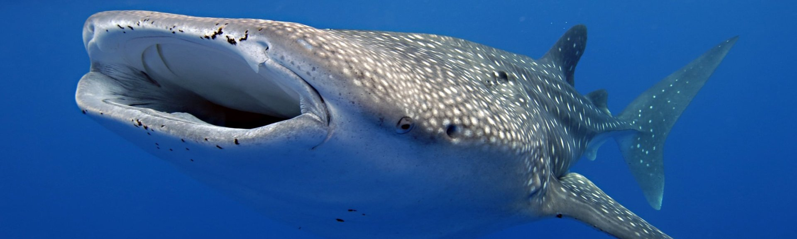
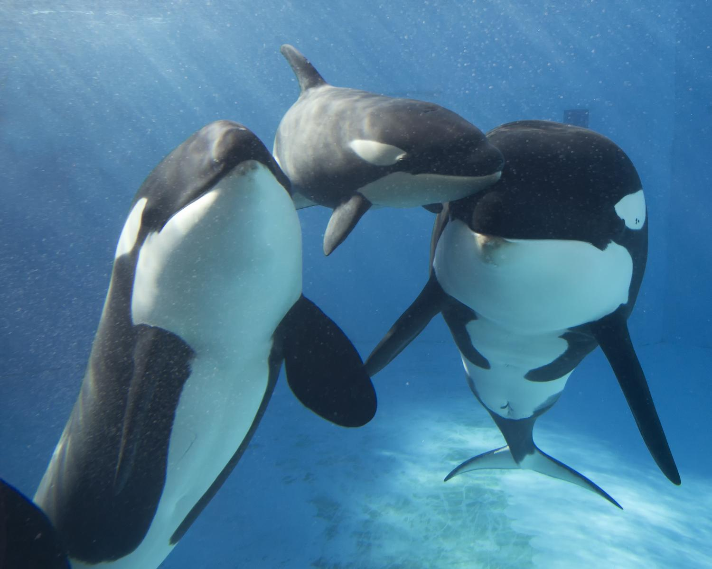

Marine Life
MAMMALS
Whales

What are whales?
Whales are a large diverse group of aquatic matine mammals.
They range in size from 2.6 metres to 29.9 meters in length.
Whales evolved from lang-living mammals, and must regularly surface to breath air, altho they can still remain underwater for long periods of time.
Whales are fully aquatic open-ocean animals - they feed, mate, give birth, suckle and raise the calfs at sea

Impacts of humanity
Unfortunately the fishing gear used for mass fishing is endangering the marine life.
This is seen in the Indian Ocean. Tuna is a large part of their economy therefor fishing is done in mass.
The littering of this fishing gear has indicated more then 300,000 marine mammals in the cetaceans family have died, this is the largest cause of death in the Indian Ocean.
The WWF and others are working to prevent this fishing method in these areas and call for more reporting of when the mammals become entangeled.